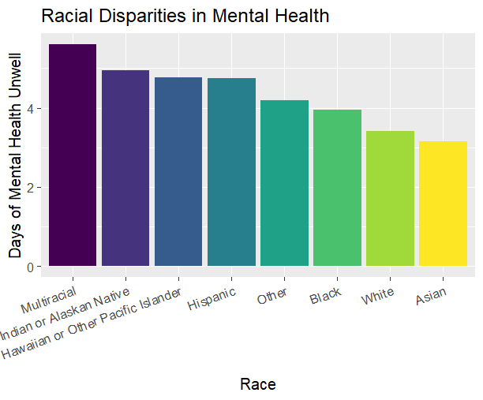

Analysis
Introduction
Our physical and mental health outcomes are deeply influenced by a combination of factors, including our environments, access to health insurance, socioeconomic status, and lived experiences. These elements work together to shape our overall well-being, and current habits, and determine the opportunities and challenges we face in maintaining good health.
Motivation Behind Data Analysis
Our proposed thesis is that better socioeconomic status and social determinants correlate to better mental and physical health. We aim to assess the relationships between socioeconomic factors and different mental and physical health outcomes.
Some questions that are explored include: How are education rates and loneliness rates related? Can we accurately predict the relationship between health status and affording medical costs? Does childhood exposure to negative social experiences affect current behavior? How does mental and physical health vary across different racial groups?
Data Findings
Racial Disparities in Health (mental and physical status)

This visualization examines racial disparities in mental health by displaying the average number of days individuals reported experiencing poor mental health. The x-axis represents the number of days, and the y-axis represents different racial categories. The bars are arranged in descending order, with each bar representing the average number of days of mental health distress for each racial group. The data reveals the following patterns. Multiracial individuals report the highest average, around 5.5 days of mental health unwellness. American Indian or Alaskan Native individuals follow closely with an average of about 5 days. Native Hawaiian or Other Pacific Islander and Hispanic individuals report nearly identical averages of about 4.8 days. The Other category is slightly above 4 days on average. Black individuals report an average of about 4 days. White individuals experience about 3.5 days on average. Asian individuals report the lowest, with an average of around 2.2 days. Multiracial and American Indian or Alaskan Native individuals, report substantially higher levels of mental health challenges compared to others.
In this bar graph, we explored racial disparities in physical health by measuring the average number of days individuals report feeling physically unwell across different racial demographics. The bars are sorted in descending order, highlighting the racial groups with the highest to lowest average days of physical health unwellness. American Indian or Alaskan Native individuals report the highest average, just above 4.3 days. Multiracial individuals follow closely with an average of nearly 3.7 days. Native Hawaiian or Pacific Islander individuals report an average of about 3.4 days. The Other category reports just above 3.3 days on average. Hispanic individuals have an average of slightly over 3 days. White individuals report an average of 2.7 days. Black individuals have an average of approximately 2.6 days. Asian individuals report the lowest, with an average of just over 2 days. American Indian or Alaskan Native individuals experience the highest average number of days feeling physically unwell, while Asian individuals report the fewest.
Education and Loneliness Level
 Across all racial groups, the percentage of survey respondents reporting feelings of loneliness tends to decrease as education level increases. Since loneliness is a key predictor of mental health, a Poisson regression model is used to investigate the relationship between state income and loneliness (which was transformed from a categorical variable to a binary variable) on the number of days of mental health unwell last month. It indicates that the predicted number of days with poor mental health per month is 543.45% higher for individuals who feel lonely compared to those who do not. Additionally, there are state-level variations: people living in wealthier states have 1.61% more predicted days of poor mental health per month than those in less affluent states.
Across all racial groups, the percentage of survey respondents reporting feelings of loneliness tends to decrease as education level increases. Since loneliness is a key predictor of mental health, a Poisson regression model is used to investigate the relationship between state income and loneliness (which was transformed from a categorical variable to a binary variable) on the number of days of mental health unwell last month. It indicates that the predicted number of days with poor mental health per month is 543.45% higher for individuals who feel lonely compared to those who do not. Additionally, there are state-level variations: people living in wealthier states have 1.61% more predicted days of poor mental health per month than those in less affluent states.
These findings suggest that socioeconomic factors, such as education level, correlate mental health through their impact on loneliness. This relationship is likely because respondents with higher education levels often report higher incomes and better life satisfaction, which are associated with lower levels of loneliness and, in turn, better mental health outcomes.
State Income and State Diversity Ratio

Health Status and Affordability of Medical Costs
Building on this, we developed a logistic regression model to predict the affordability of medical costs based on health status. The model reveals that as health status improves, the predicted probability of affording medical costs increases. The coefficient for health status in the regression model is 0.56291, indicating that a one-unit increase in health status leads to a significant increase in the log-odds of affording medical costs. By converting this coefficient to a percentage change, we find that a better health status corresponds to a 75.58% higher likelihood of being able to afford medical costs.
The plot clearly illustrates this trend, with the red line showing the relationship between health status and predicted affordability, while the blue points represent individual predictions. It reveals that individuals with poorer health are less likely to afford medical costs, whereas those in better health are more likely to do so. This supports our thesis that better health status correlates with better access to healthcare resources, emphasizing the impact of social determinants on individuals’ ability to manage medical expenses and their overall well-being.
Past Exposure and Current Consumption
 Respondents were asked to report the number of days they used marijuana over the past 30 days. The box plot illustrates the distribution of marijuana usage frequencies based on childhood exposure to specific conditions or behaviors. The y-axis represents the number of days marijuana was used in a 30-day period, while the x-axis indicates binary exposure levels: “Yes” for respondents who were exposed to a specific condition or behavior during childhood, and “No” for those who were not. The graph features three color-coded box plots, each representing a different type of exposure. The first plot (teal) corresponds to exposure to someone who was depressed, mentally ill, or suicidal. The second plot (yellow) represents exposure to someone who used illegal street drugs or abused prescription medications. The third plot (purple) captures exposure to someone who was a drinker or alcoholic.
Respondents were asked to report the number of days they used marijuana over the past 30 days. The box plot illustrates the distribution of marijuana usage frequencies based on childhood exposure to specific conditions or behaviors. The y-axis represents the number of days marijuana was used in a 30-day period, while the x-axis indicates binary exposure levels: “Yes” for respondents who were exposed to a specific condition or behavior during childhood, and “No” for those who were not. The graph features three color-coded box plots, each representing a different type of exposure. The first plot (teal) corresponds to exposure to someone who was depressed, mentally ill, or suicidal. The second plot (yellow) represents exposure to someone who used illegal street drugs or abused prescription medications. The third plot (purple) captures exposure to someone who was a drinker or alcoholic.
Each box plot summarizes the variation in marijuana usage frequency across exposure levels. Mean values are represented by the red dots present in the images. According to the data, the mean marijuana frequency across all exposure type is larger for respondents who indicated that they were exposed. For alcohol exposure, the mean is 14.59 for respondents who were not exposed and 16.43 for respondents who were exposed. For depression exposure, the mean for respondents who were not exposed is 14.2 and the mean for respondents who were exposed is 16.78. For dug exposure, the mean for respondents who weren’t exposed is 14.77, and he mean for respondents who were exposed is 17.03. Median values also follow a similar pattern with respondents exposed to a condition or behavior, witnessing higher median values. For instance, the median value for respondents who were not exposed to depression is 10 in contrast the median value for exposed respondents is 20. For alcohol exposure type the median is 12 for those who weren’t exposed and 15 for those who were. For the drug exposure category, the median is 12 for respondents who weren’t exposed and 20 for those who were exsposed Across all groups, the minimum number of usage days is consistent at 1 day. The maximum usage is 30 days across all groups, showing that some individuals reported daily marijuana use regardless of exposure type. There is substantial variability indicated by the box heights and whiskers in the usage frequency, particularly among exposed individuals.
 An ANOVA test was performed to assess whether the differences in results between the “Yes” and “No” options were statistically significant.
An ANOVA test was performed to assess whether the differences in results between the “Yes” and “No” options were statistically significant.

The P-value (2.22e-07) and F-value (26.938) suggest a highly significant effect of exposure level on marijuana usage. Respondents exposed to these conditions in childhood are more likely to show differences in marijuana usage frequency. The P-value (1.000) and F-value (0.000) indicate no significant effect of exposure type on marijuana usage. The P-value (0.759) and F-value (0.276) indicate no significant interaction between exposure type and exposure level. In other words, the effect of exposure level is consistent across all types of exposure. Exposure type alone does not significantly influence marijuana usage, but exposure level is a strong predictor. Additionally, there is no significant interaction between exposure type and exposure level. This suggests that exposure to conditions in childhood has a significant effect on their marijuana usage, regardless of the specific type of exposure. Thus, we emphasize that exposure to these behaviors during childhood has a significant likelihood of shaping current behavioral patterns, particularly concerning health and the impact of exposure to relatively unhealthy conditions.
To examine the relationship between marijuana consumption and physical health, a logistic regression model was employed to assess how marijuana consumption frequency and the inability to pay bills impact physical health status. Physical health status, which was a categorical variable, was transformed into a binary variable, with “0” representing good health and “1” representing poor health. The regression analysis reveals that a one-unit increase in marijuana consumption is associated with a 4.23% increase in the likelihood of experiencing poor health. Additionally, financial status plays a significant role: individuals unable to afford monthly bills, such as rent, are 169.16% more likely to report poor health compared to those who can afford their bills. These findings underscore that, beyond medical costs, financial stress is strongly correlated with health outcomes. Overall, the results highlight the broader link between higher socioeconomic status and better physical health.
Rubric: On this page
You will
- Introduce what motivates your Data Analysis (DA)
- Which variables and relationships are you most interested in?
- What questions are you interested in answering?
- Provide context for the rest of the page. This will include figures/tables that illustrate aspects of the data of your question.
- Modeling and Inference
- The page will include some kind of formal statistical model. This could be a linear regression, logistic regression, or another modeling framework.
- Explain the ideas and techniques you used to choose the predictors for your model. (Think about including interaction terms and other transformations of your variables.)
- Describe the results of your modelling and make sure to give a sense of the uncertainty in your estimates and conclusions.
- Explain the flaws and limitations of your analysis
- Are there some assumptions that you needed to make that might not hold? Is there other data that would help to answer your questions?
- Clarity Figures
- Are your figures/tables/results easy to read, informative, without problems like overplotting, hard-to-read labels, etc?
- Each figure should provide a key insight. Too many figures or other data summaries can detract from this. (While not a hard limit, around 5 total figures is probably a good target.)
- Default
lmoutput and plots are typically not acceptable.
- Clarity of Explanations
- How well do you explain each figure/result?
- Do you provide interpretations that suggest further analysis or explanations for observed phenomenon?
- Organization and cleanliness.
- Make sure to remove excessive warnings, hide most or all code, organize with sections or multiple pages, use bullets, etc.
- This page should be self-contained, i.e. provide a description of the relevant data.